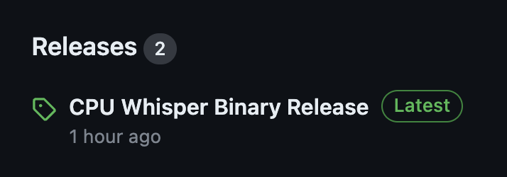

Using Github Action to build Candle image on Azure Spot Runner VM
Prerequisites
- A Github Account
- An Azure Account
- Finish setup Azure Spot Runner
Create Github Secrets
- In Github, go to your repository.
- Go to Settings in the navigation menu.
- Select Securigy > Secrets and variables > Actions.
- Select New Repository Secret
- Paste the entire Json output from the Azure CLI command into the github action secret's value field. Give the secret the name:
AZURE_CREDENTIALS. - Select Add secret.
Build your image
Structure Overview
- Azure-spot-runner
- .github/workflow
- create-image.yml
- runner.yml
- workflow-artifacts
- cloud-init.txt
- setup-image.sh
-
Use the Create-Image.yml file below to create a custom virtual machine image.
on: workflow_dispatch jobs: job1: runs-on: ubuntu-latest name: Create Custom Linux Image steps: - name: Checkout uses: actions/checkout@v2 - name: Login via Az module uses: azure/login@v1 with: creds: ${{secrets.AZURE_CREDENTIALS}} - name: Build and Distribute Custom VM Image uses: azure/build-vm-image@v0 with: resource-group-name: '<RESOURCE_GROUP_NAME>' location: '<RESOURCE_LOCATION>' managed-identity: '<AZURE-IDENTITY>' source-os-type: 'linux' vm-size: "Standard_D2s_v3" source-image-type: 'platformimage' source-image: Canonical:0001-com-ubuntu-server-jammy:22_04-lts-gen2:latest customizer-source: ${{ github.workspace }}/workflow-artifacts customizer-script: | ls -l /tmp/ ls -l /tmp/workflow-artifacts sh /tmp/workflow-artifacts/setup-image.sh
-
You can modify the following information to your own secrets you build in azure-spot-runner
resource-group-name: '<RESOURCE_GROUP_NAME>' location: '<RESOURCE_LOCATION>' managed-identity: '<AZURE-IDENTITY>'Replace the placeholders, where you created them in the Hello-azure.md,
You can also change the VM type (CPU & GPU) by changing
<vm-size>,<source-image-type>,<source-image>
-
You will also create an
setup-image.shbelow for the image build.#!/bin/bash # # Setup the runner to have the Azure CLI pre-installed as well as the Actions # Runner # Define a working directory WORK_DIR="/opt/actions-runner" # Install Azure CLI, should not use sudo curl -sL https://aka.ms/InstallAzureCLIDeb | bash # Create a folder mkdir -p $WORK_DIR && cd $WORK_DIR # Download the latest runner package curl -O -L https://github.com/actions/runner/releases/download/v2.310.2/actions-runner-linux-x64-2.310.2.tar.gz # Extract the installer tar xzf $WORK_DIR/actions-runner-linux-x64-2.310.2.tar.gz
Start your Runner and Build the Binary
-
After you create the VM image, now we can start run it by using the Runner.yml below:
on: workflow_dispatch jobs: job1: runs-on: ubuntu-latest name: Launch Runner steps: - name: Checkout uses: actions/checkout@v2 - name: Get GitHub Runner Registration Token run: | set -e RUNNER_TOKEN=$(curl -f -X POST \ -H "Authorization: token ${{ secrets.PAT }}" \ -H "Accept: application/vnd.github.v3+json" \ https://api.github.com/repos/<YOUR_REPO_LOCATION>/actions/runners/registration-token | grep token | cut -d '"' -f 4) echo $RUNNER_TOKEN if [ -z "$RUNNER_TOKEN" ]; then echo "Failed to retrieve the runner token." exit 1 fi echo "RUNNER_TOKEN=$RUNNER_TOKEN" >> $GITHUB_ENV env: PAT: ${{ secrets.PAT }} - name: Modify cloud-init.txt run: | set -e sed -i "2iRUNNER_TOKEN=$RUNNER_TOKEN" workflow-artifacts/cloud-init.txt if ! grep -q "RUNNER_TOKEN=$RUNNER_TOKEN" workflow-artifacts/cloud-init.txt; then echo "Modification with sed failed." exit 1 fi - name: Login via Az module uses: azure/login@v1 with: creds: ${{secrets.AZURE_CREDENTIALS}} - name: Find the latest image URI id: find_image uses: azure/CLI@v1 with: inlineScript: | IMAGE_URI=$(az image list --resource-group githubVM --query "[-1].id" --output tsv) echo "::set-output name=image_uri::$IMAGE_URI" - name: CREATE VM id: create_vm uses: azure/CLI@v1 with: inlineScript: | az vm create --resource-group githubVM --name "app-vm-${{ GITHUB.RUN_NUMBER }}" --admin-username "runner" --admin-password "${{ secrets.VM_PASSWORD }}" --location eastus \ --custom-data workflow-artifacts/cloud-init.txt \ --image "${{ steps.find_image.outputs.image_uri }}" \ --generate-ssh-keys # At the end of your CREATE VM step - name: Set VM Name Output run: echo "::set-output name=vm_name::app-vm-${{ GITHUB.RUN_NUMBER }}" id: vm_name -
You can add your customer code inside the
workflow-artifacts/cloud-init.txtbelow for specific need.#!/bin/bash # Define a working directory export HOME=/root WORK_DIR="/opt/actions-runner" # Start the runner chown -R runner $WORK_DIR su - runner -c "$WORK_DIR/config.sh --unattended --url https://github.com/nogibjj/candle_scott_Azure_vm --token $RUNNER_TOKEN" nohup su - runner -c "$WORK_DIR/run.sh" & # Install packages apt-get update apt-get install -y build-essential pkg-config libssl-dev protobuf-compiler jq git-lfs curl jq git lfs install # Install Rust curl --proto '=https' --tlsv1.2 -sSf https://sh.rustup.rs | sh -s -- -y export PATH="$HOME/.cargo/bin:$PATH" # Get the candle Repo git clone https://github.com/huggingface/candle.git /root/candle cd /root/candle # Build the model and depoly the binary into Github Release. if cargo build --example whisper --release; then FILE="/root/candle/target/release/examples/whisper" MIME_TYPE=$(file -b --mime-type "$FILE") TAG="v$(date +%Y%m%d%H%M%S)" RELEASE_NAME="CPU Whisper Binary Release" GITHUB_TOKEN="$GITHUB_TOKEN" # Token passed from GitHub Actions CREATE_RELEASE_RESPONSE=$(curl -X POST -H "Authorization: token $GITHUB_TOKEN" -H "Content-Type: application/json" -d "{\"tag_name\": \"$TAG\", \"name\": \"$RELEASE_NAME\"}" "https://api.github.com/repos/nogibjj/candle_scott_Azure_vm/releases") UPLOAD_URL=$(echo $CREATE_RELEASE_RESPONSE | jq -r .upload_url | sed "s/{?name,label}//") curl -X POST -H "Authorization: token $GITHUB_TOKEN" -H "Content-Type: $MIME_TYPE" --data-binary @"$FILE" "$UPLOAD_URL?name=$(basename "$FILE")" else echo "Cargo build failed." fiThe example code in cloud-init.txt is set up to build the candle whisper binary and deploy the binary into the Github release.
Note, after the runner build, it might takes up to 15 mins for this cpu VM to finish the work and deploy the whisper release in Github.
After the binary deploy to Github, you will find out the release file in your github repo.

Debugging on VM
You can check the log from Azure Portal:
- Go to the Azure Portal.
- Navigate to the "Virtual Machines" section.
- Find and select the VM you created (app-vm).
- Under the "Support + troubleshooting" section, find and click on "Serial console".
- The serial console will open in a new window. You might have to wait for a few moments as the console establishes a connection to the VM.